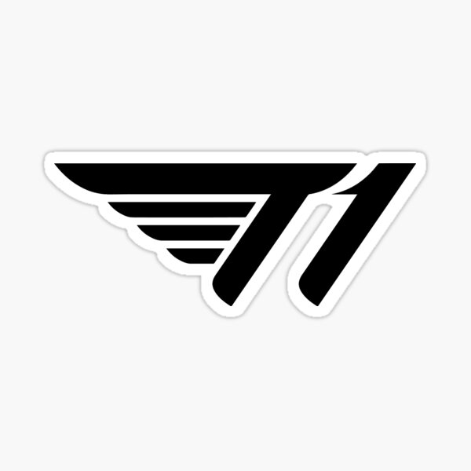

Về T1
T1 là đội tuyển vĩ đại trong lịch sử LOL Esport, với kỷ lục 5 lần vô địch CKTG vào các năm 2013, 2015, 2016, 2023, 2024. Đặc biệt chú ý rằng cả 5 lần đều có sự góp mặt của quỷ vương bất tử Lee "Faker" Sang-hyeok. Đội hình hiện tại gồm có đường top Doran, đường rừng Oner, đường mid Faker và cặp bot gồm xạ thủ Gumayushi và Keria. Bắt đầu cổ vũ đội từ sau chung kết Worlds 2022, nơi mà T1 đã thua trước DRX với tỉ số 3-2.